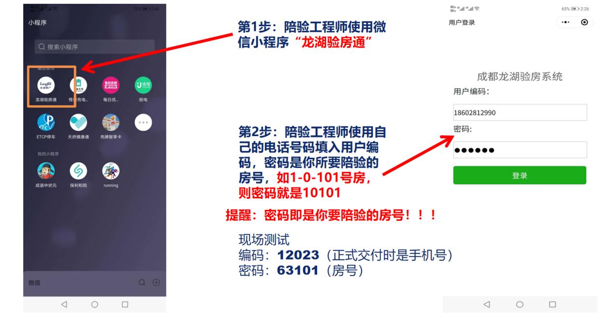
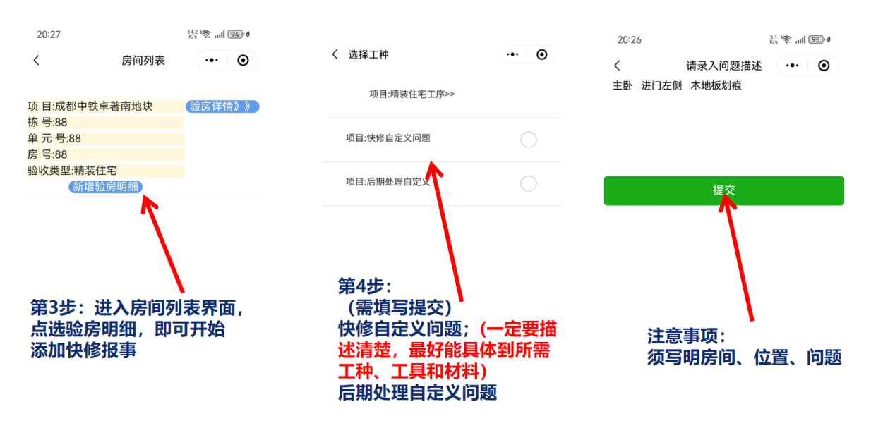
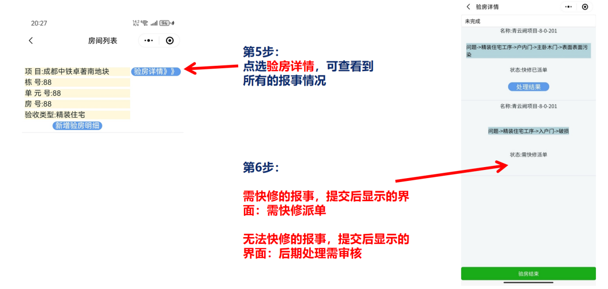
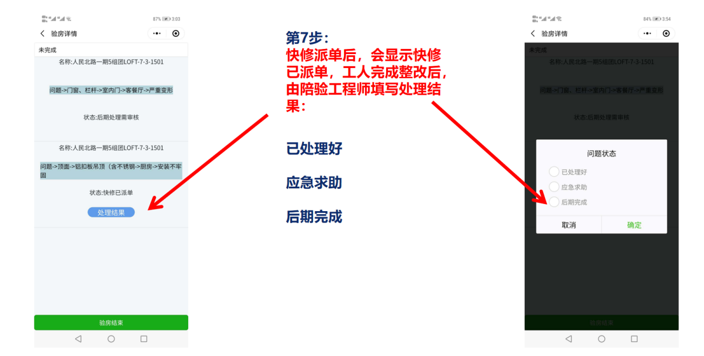
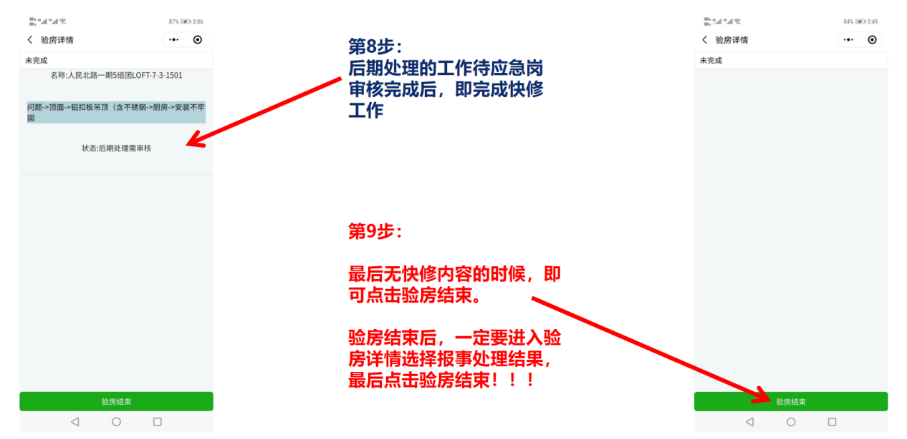
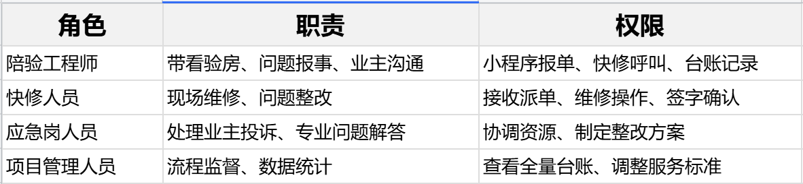
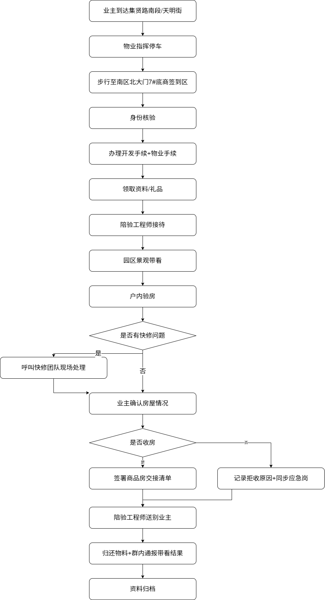
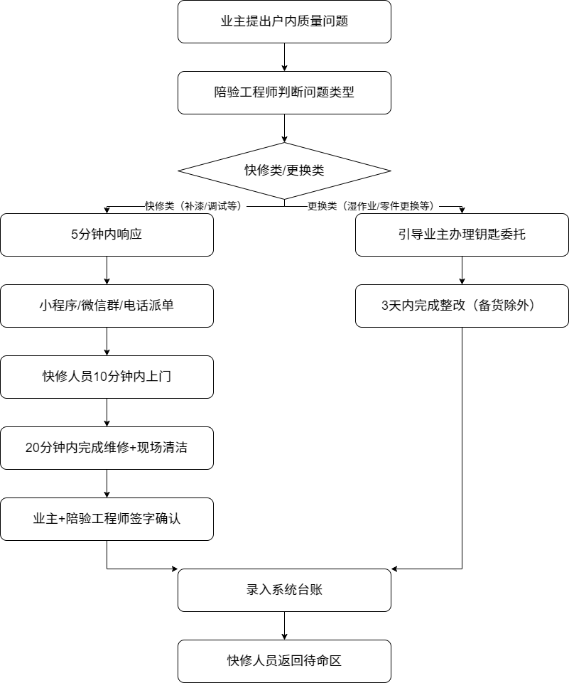
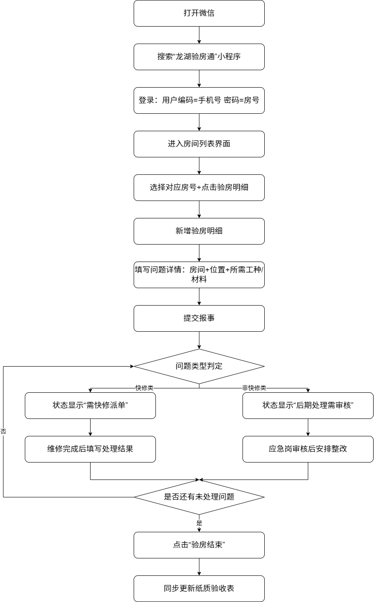
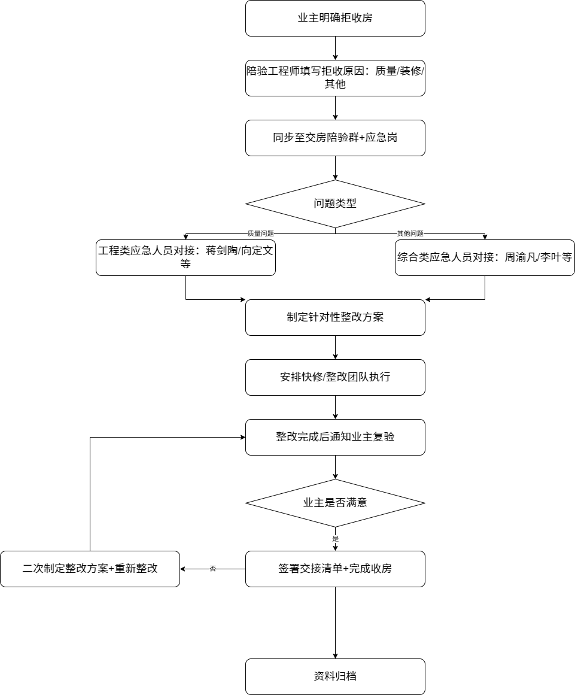

项目基础信息：南区住宅1 - 5#共406户（已售392户），集中交付时间2025.9.13 - 9.16，签到地点为南区北大门服务中心
现状痛点：基于业主带看记录，高频问题为空鼓、瓷砖破损、入户门锁故障；拒收房核心原因为整改未完成、验房师复检未通过
效率目标：单户陪验时长控制在**40分钟-70分钟**，快修响应及时率达100%
质量目标：因质量问题导致的拒收房率降至**15%** 以下
规范目标：统一陪验说辞、快修流程、验房小程序使用标准
规划业主从停车到离开的全流程动线，明确各环节节点要求
业主动线：停车引导→签到核验→手续办理→园区带看→户内验房→快修处理→送别全流程闭环
各环节要求：标注每个节点的责任人、时间限制、物料清单（夹板、验收表、钥匙等）
物业引导员、陪验工程师
动线无断点，业主等待时间不超过**15分钟**
明确快修问题分类、响应时限、人员配置及操作规范
问题分类：快修类（补漆、调试等，5分钟响应、20分钟处理）、更换类（湿作业等，3天内处理）
人员配置：224人快修团队，明确泥水工、门窗调试等各工种人数及着装要求
派单方式：优先小程序派单，其次微信群、电话应急
快修人员禁止与业主直接沟通，需通过陪验工程师对接
维修完成后需业主签字确认，同步录入系统台账
快修总指挥苏秋、快修调配员冯忠
快修响应及时率100%，业主签字确认率100%
规范龙湖验房通小程序的登录、报事、派单、验收全流程操作
登录：手机号为用户编码，房号为密码
报事：填写房间、位置、问题详情，明确所需工种及材料
派单：快修类提交后显示“需快修派单”，非快修类显示“后期处理需审核”
验收：维修完成后填写处理结果，确认无问题后点击“验房结束”





问题描述需具体，避免模糊表述；验房结束后需同步更新纸质台账
陪验工程师、小程序操作员李黎
报事信息准确率100%，派单处理闭环率100%

流程图如下：

各环节责任人：停车引导 - 物业、手续办理 - 开发 / 物业专员、带看 - 陪验工程师
业主等待时长≤15 分钟，单户陪验总时长40分钟——70分钟
快修派单与处理闭环流程图

派单优先级：小程序＞微信群＞电话
快修人员要求：统一穿维修马甲，禁止与业主直接沟通
验房小程序操作流程图

密码规则：例如房号 1-0-101，密码为 10101
问题描述要求：必须具体，如 “主卧进门左侧木地板划痕”
业主拒收房问题处理流程图

应急响应时限：接报后 10 分钟内对接责任人
复验要求：整改完成后 24 小时内通知业主
快修类问题5分钟内响应，20分钟内处理；应急问题10分钟内到场
陪验说辞统一、着装统一、操作流程统一
每日统计交房户数、报事条数、整改完成率、拒收房率
验房小程序支持手机端操作，适配不同网络环境
快修人员不足：启动备用人员储备，协调施工单位增派人手
业主投诉冲突：陪验工程师立即呼叫应急岗，避免与业主直接争执
小程序故障：切换微信群 / 电话派单模式，确保报事流程不中断
天气异常：提前准备雨具、临时遮雨棚，调整户外带看路线
交付效率：单户陪验时长≤**40 分钟**，日均交房户数≥**95 户**
服务质量：努力保障业主满意度≥**90%**，拒收房率≤**15%**
流程合规：各模块操作规范执行率 100%
试点阶段：选取1、2、3、4和5 号楼进行流程试点，收集优化建议
推广阶段：将优化后的流程推广至全小区
优化阶段：根据交付数据持续调整服务标准
单业主，收房概率很大，一般不会挑太多问题，带看人员可表现积极一些，主动快修报事两三条，让业主感受到我们的迅速反应。
双业主(情侣或者夫妻)，需观察谁占主导意见，积极反馈主导业主的同时，尽量同化另一位无感知业主。
一家人(带孩子或者父母)，更多会在意如何摆放家具，可积极提供一些建议让业主选择，转移对质量问题的注意力。
朋友陪同，多数来挑毛病观望。尽量沟通所有问题均可以在接房后统一处理，且拿到钥匙后在整改过程中可随时核验。入户后不吝惜赞美之词：户型很正，采光很好，隐私性很好等等。有问题尽量都报快修，当场整改。